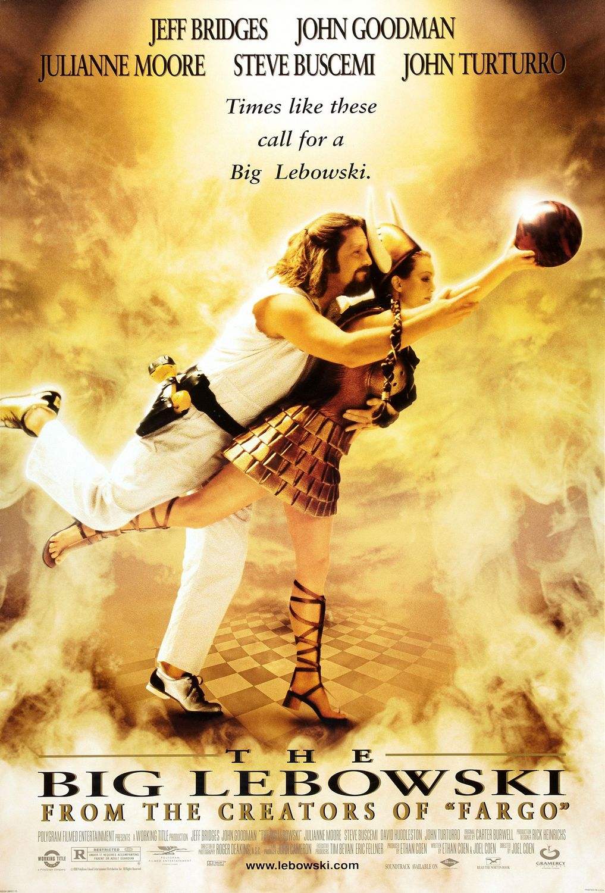

Thomas Desmoulins
Consultant/Dévelopeur Freelance
De la jugeotte, du bon sens, des bonnes pratiques et un peu de savoir faire web me permettent d'accompagner les entreprises, petites ou moins petites, dans leurs projets Internet
À vous de voir ;)Ça peut vous aider à voir qui je suis : voici mes films préférés
|  |
The Big LebowskiJ'ai longtemps considéré que c'était le meilleur film de tous les temps. Pour en être sûr, je l'ai regardé environ 2200 fois. Les personnages sont magnifiquement travaillés et servis par des acteurs géniaux. L'histoire est absurde comme je les aime. Les dialogues sont grandioses. Je crois que toutes les phrases du film, et même tous les mots, ont été sous-pesés : ce n'est peut-être qu'au 300ème visionnage que j'ai enfin perçu toutes les subtilités des dialogues. Attention: à ne surtout pas voir en VF, c'est de l'ordre du crime. |
InterstellarJ'adore Christopher Nolan : il fait vraiment parti, pour moi, du panthéon des plus grand réalisateur de tous les temps. Ses films nous plongent toujours dans un univers à part. À la fin, on se dit toujours : "Hum, je crois que je vois, mais il va falloir le revoir pour tout bien comprendre!" Et on a beau les revoir, on a toujours ce sentiment. Pourquoi? Je crois que c'est voulu: il ne faut pas forcément aller chercher le moindre détail pour comprendre, il faut prendre certaines choses comme elles sont, et se laisser porter. Une chose est sûre: on n'est pas déçu du voyage ! |
|
 |
Django UnchainedJ'adore Tarantino!! Dans Django, il y a tout ce que j'aime chez lui : le rythme fait de lenteur et d'à coup violent, la musique, les personnages, les dialogues et les monologues. Le tout dans une ambiance Western et avec des acteurs magiques, c'est vraiment du pur kif!! |
Retrouvez moi sur les réseaux :